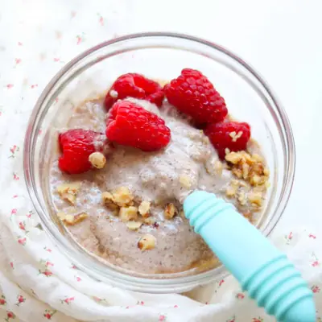

Protein chia pudding

Ingredients
- 1/2 cup red lentils, rinsed (90g)
- 1 1/2 cups water (to cook the lentils)
- 1 overripe medium banana
- 2-3 tablespoons maple syrup (optional)
- 1 cup milk of choice
- 1/2 cup plain Greek yogurt
- 1 teaspoon ground cinnamon
- 1 teaspoon vanilla extract
- 1/4 cup chia seeds, whole or ground (see note)
Steps
- Cook the lentils. Add the rinsed red lentils and water to a small saucepan. Bring to a boil, then reduce the heat to low and simmer, uncovered, for 12–15 minutes, or until the lentils are very soft and most of the water has been absorbed. Remove from the heat and let cool slightly.
- Blend. Add the cooked lentils, banana, milk, Greek yogurt, cinnamon, maple syrup (if using), and vanilla to a blender. Blend until completely smooth and creamy.
- Add the chia seeds. Pour the mixture into a bowl or airtight container. Stir in the chia seeds until evenly combined.
- Chill. Cover and refrigerate for at least 4 hours, preferably overnight, until thickened.
- Serve. Give the pudding a good stir before serving. If it's thicker than you prefer, stir in a splash of milk until it reaches your desired consistency.
Recipe by Min Kwon · Kidfriendly Meals, from MJ and Hungryman. Saved here for personal use; the original has the full notes, tips and photos. Open original